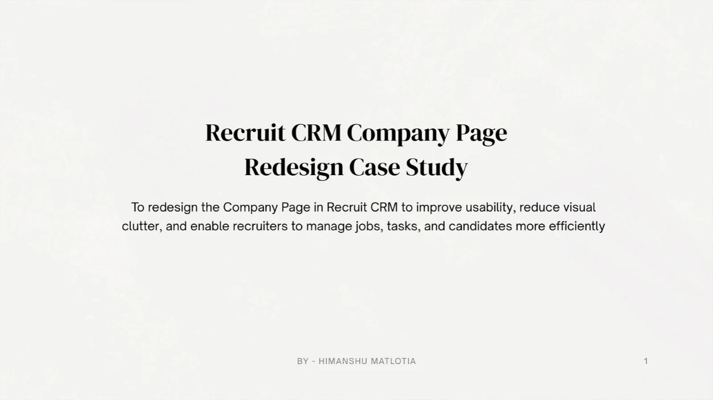
B2B SaaS Case Study • Product Design
Recruit CRM Company Page Redesign
To redesign the Company Page in Recruit CRM to improve usability, reduce visual clutter, and enable recruiters to manage jobs, tasks, and candidates with maximum efficiency and clarity.
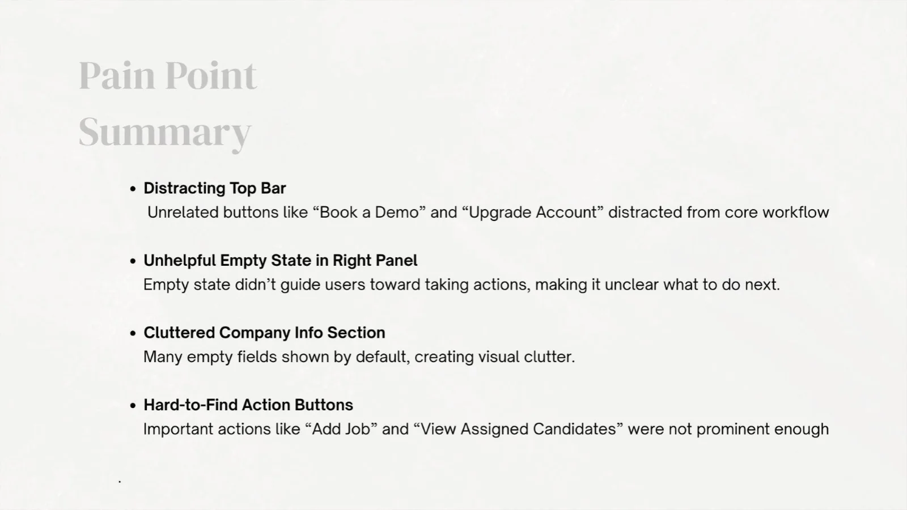
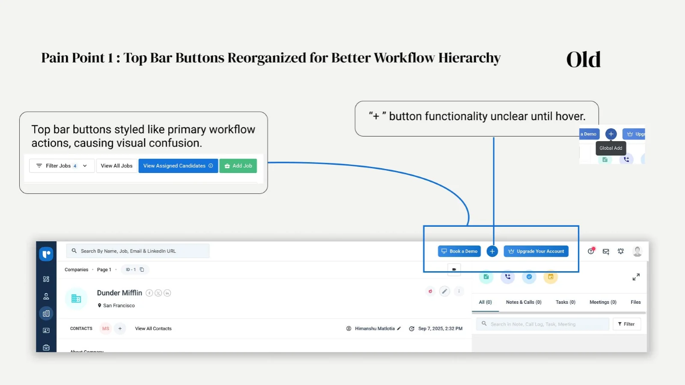
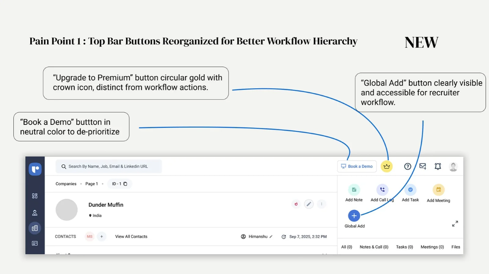
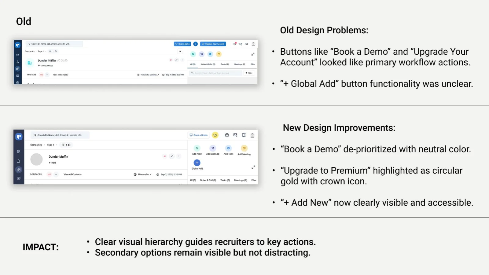
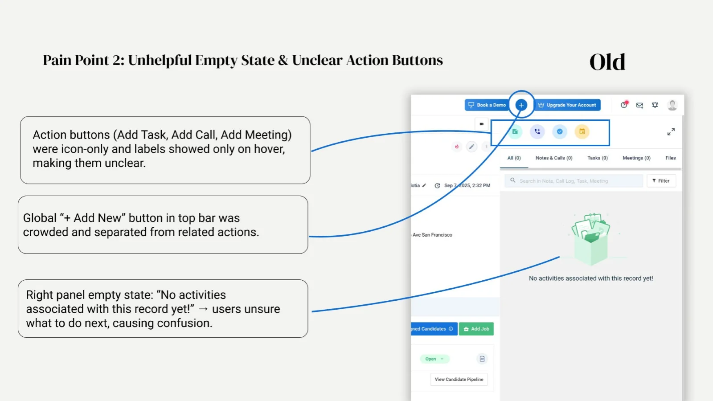
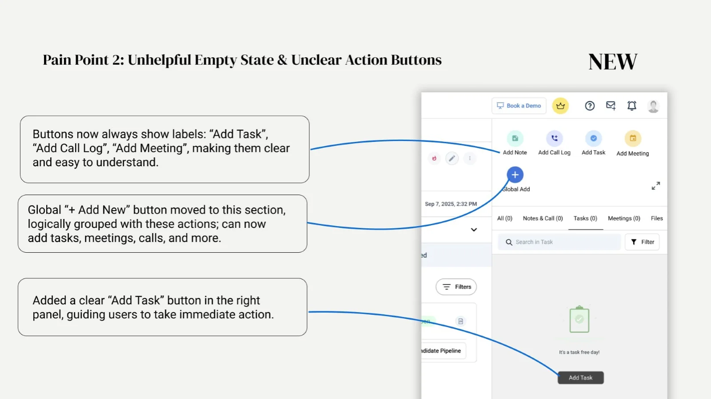
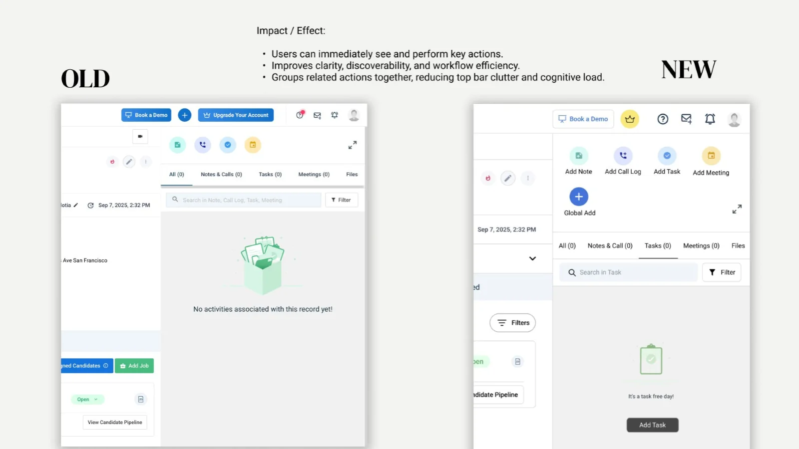
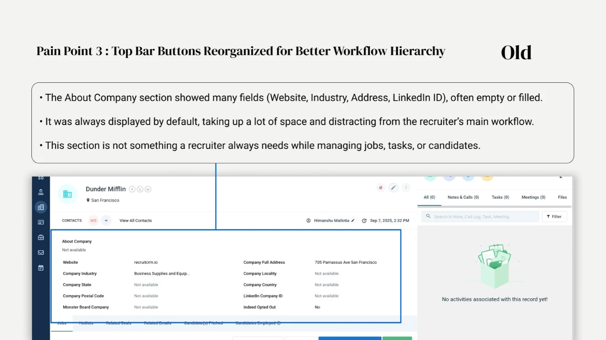
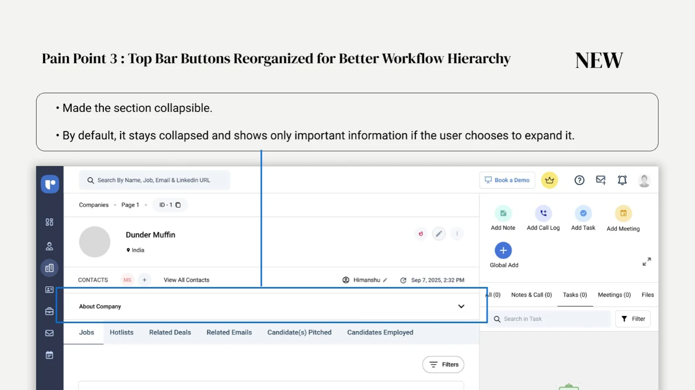
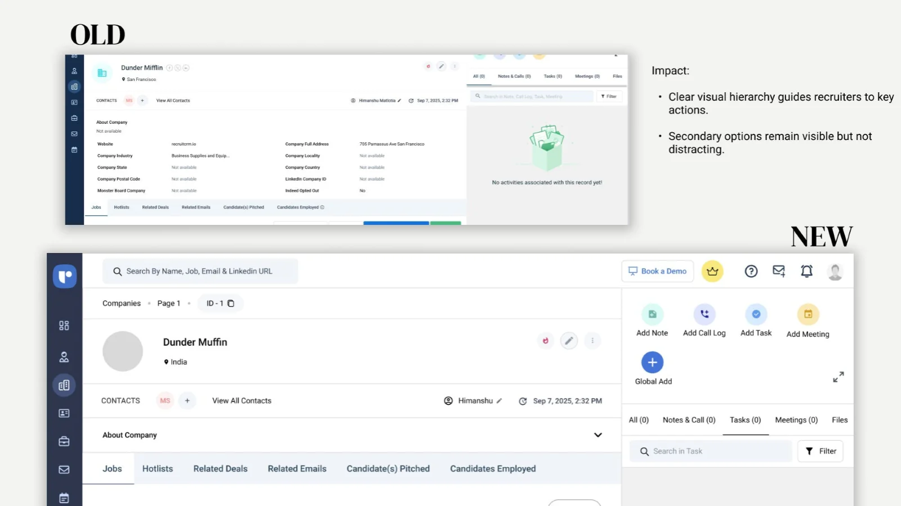
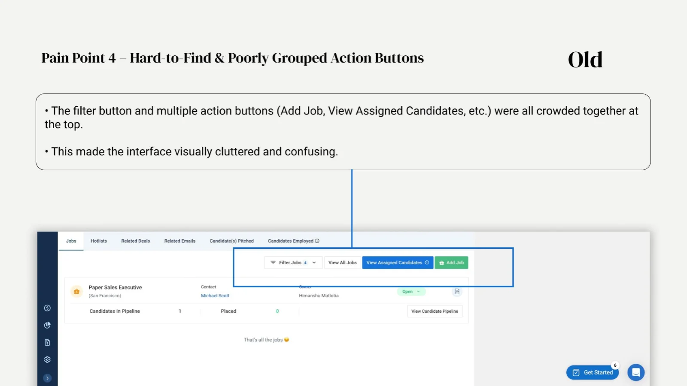
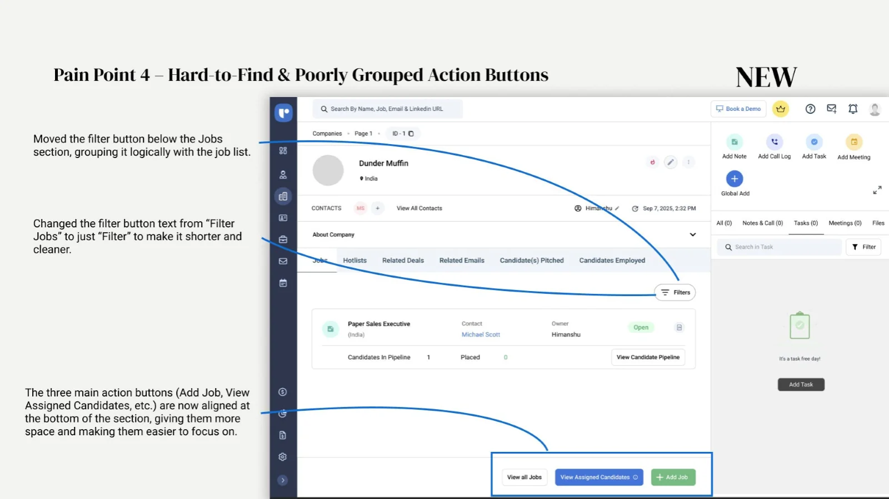
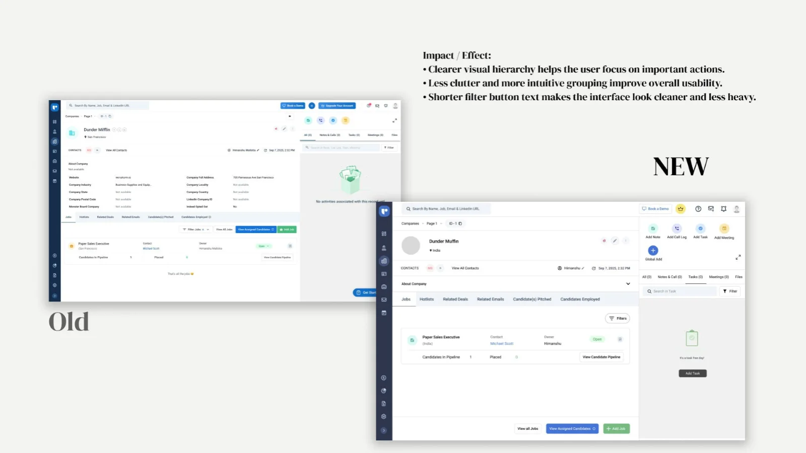
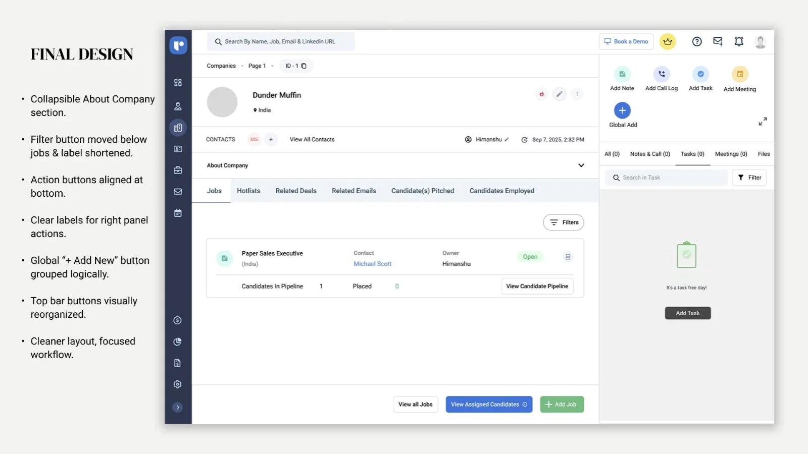